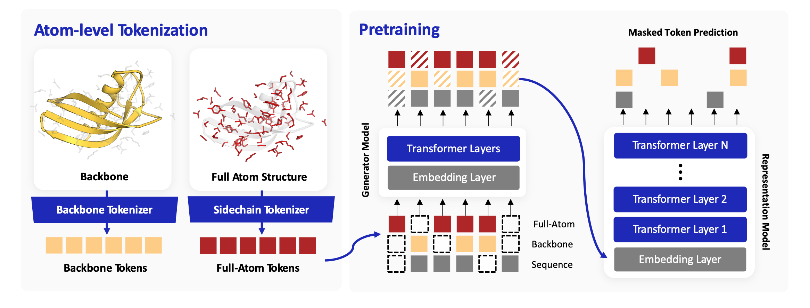
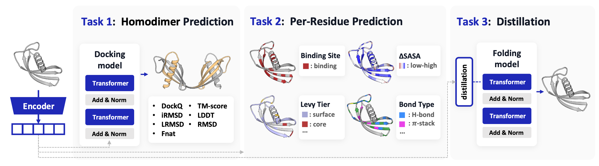
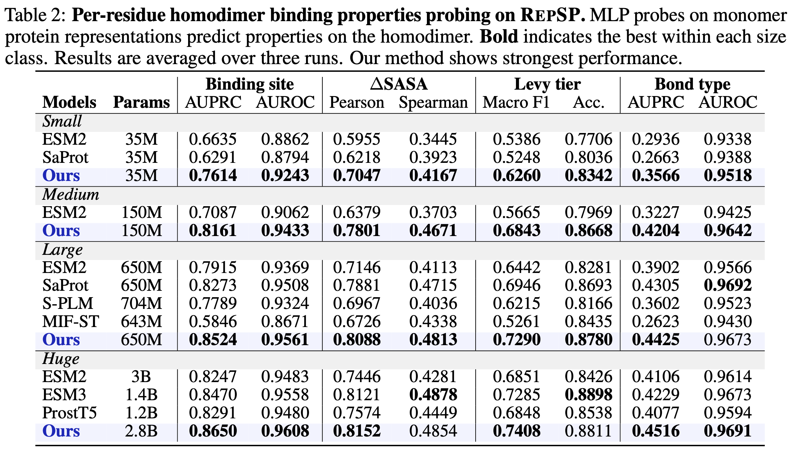
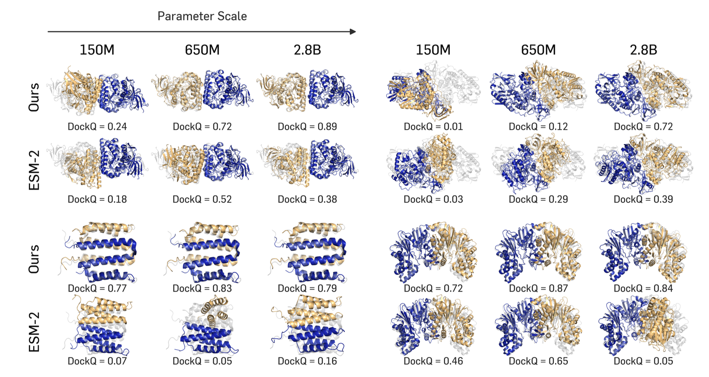
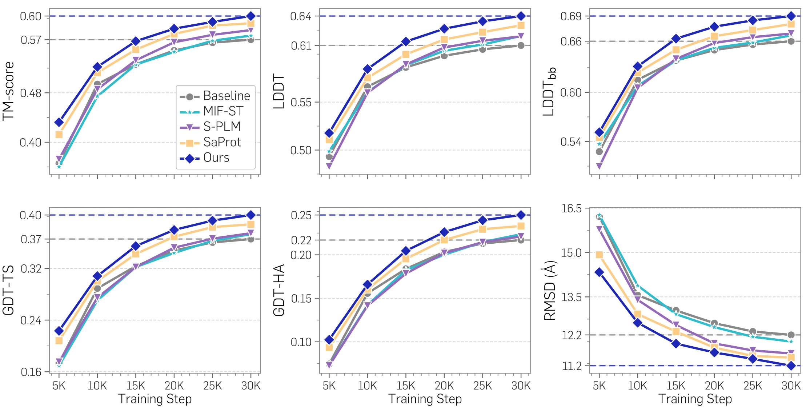

Q: Can pretrained protein representations serve as useful geometric signals for structure-predictive modeling?
Protein representation models are usually judged on EC/GO function annotation — tasks that don't actually test whether a representation carries the geometric signal a downstream structure model could use. On those benchmarks, sequence-only models stay competitive with structure-aware ones, so it's never clear whether structural supervision is doing real work. This work answers the question in two pieces:
Method TriProRep is a structure-aware pretrained encoder that ties together three aligned residue-level views — amino-acid identity, backbone geometry, and a new full-atom side-chain token learned with a VQ-VAE in an SE(3)-invariant frame. The three views are trained jointly with an ELECTRA-style corrective objective: a small generator perturbs each view, and the large encoder is forced to recover the originals.
Benchmark RepSP is, to our knowledge, the first benchmark built specifically to test representations for structure-predictive use. Three tasks — homodimer flexible docking, per-residue binding-property probing, and distillation into a monomer folder — all stress whether a representation carries the geometry a downstream structural model can actually consume.
Findings TriProRep wins across every RepSP task and every model scale we tried. The 650M model already beats every huge baseline on most flexible-docking metrics; the 2.8B model is best on nearly all of them. Distilling its representations gives the fastest, highest-quality monomer folder among the encoders we compared.
For each residue we define three aligned tokens. The amino-acid token encodes sequence identity, as in ESM2. The backbone-geometry token, obtained from a VQ-VAE-based tokenizer (AminoAseed), captures local backbone substructure with higher codebook utilization than Foldseek 3Di. We additionally introduce a full-atom-geometry token: a residue-level VQ-VAE that takes heavy-atom coordinates expressed in an SE(3)-invariant local frame defined by the N, Cα, and C atoms, along with dihedral-angle features. This token explicitly captures intra-residue side-chain rotamer geometry — information that is largely inaccessible from backbone geometry alone.
Because each residue is represented by three views, independent token replacement can produce inputs that are plausible within each view but mutually inconsistent across views. A small generator corrupts each view; the large representation model is trained to recover the original tokens at every position, using separate token-recovery heads for the three views. Recovering the originals encourages the model to enforce consistency among sequence identity, backbone geometry, and residue full-atom geometry — producing a stronger training signal than single-view masked language modeling.
RepSP evaluates whether protein representations improve structure prediction across three complementary tasks. To the best of our knowledge, this is the first benchmark to evaluate structure-aware representations for flexible-docking prediction and distillation.

Task 1 Homodimer flexible docking. A 100M flexible-docking model (a SimpleFold variant) takes monomer representations as input and predicts homodimer structures, evaluated with both interface metrics (DockQ, iRMSD, LRMSD, Fnat) and overall metrics (TM-score, LDDT, RMSD).
Task 2 Per-residue binding-property probing. Frozen monomer representations are probed with MLPs for four residue-level targets: binary binding site, ΔSASA, Levy tier (5 classes), and bond type (5 interaction classes).
Task 3 Distillation for monomer structure prediction. Representations are used as dense alignment targets for training SimpleFold-100M, with structure-prediction quality measured by TM-score, GDT-TS, GDT-HA, LDDT, LDDTbb, and RMSD.
We pretrain at four scales — 35M, 150M, 650M, and 2.8B — and compare against sequence-only ESM2 and structure-aware models (SaProt, S-PLM, MIF-ST, ESM3, ProstT5). Across all scales, TriProRep improves both interface quality and overall structural accuracy. Notably, our 650M model already outperforms the huge baselines on most metrics; our 2.8B model is best on nearly every metric.


Beyond serving as input features, representations can also act as dense alignment targets for training a structure-prediction model. Distilling TriProRep into SimpleFold-100M yields the fastest convergence and the strongest final structure-prediction quality across every metric we evaluate — ahead of the no-REPA baseline as well as ESM2-, SaProt-, S-PLM-, and MIF-ST-aligned variants.

Two patterns emerge across the RepSP tasks. First, structure-aware models broadly outperform sequence-only baselines once the evaluation actually requires geometric information — making RepSP a useful proving ground for structure-sensitive representation quality. Second, the gains from TriProRep are most pronounced on interface-level metrics, which depend not only on accurate monomer structures but on their relative placement — suggesting that finer geometric detail in the representation is what drives complex-level reasoning.
@misc{kim2026atomlevelproteinrepresentationlearning,
title={Atom-level Protein Representation Learning Improves Protein Structure Prediction},
author={Taewon Kim and Hyosoon Jang and Hyunjin Seo and Seonghwan Seo and Hyeongwoo Kim and Wonho Zhung and Mingyeong Shin and Wooyoun Kim and Sungsoo Ahn},
year={2026},
eprint={2605.22133},
archivePrefix={arXiv},
primaryClass={q-bio.BM},
url={https://arxiv.org/abs/2605.22133},
}